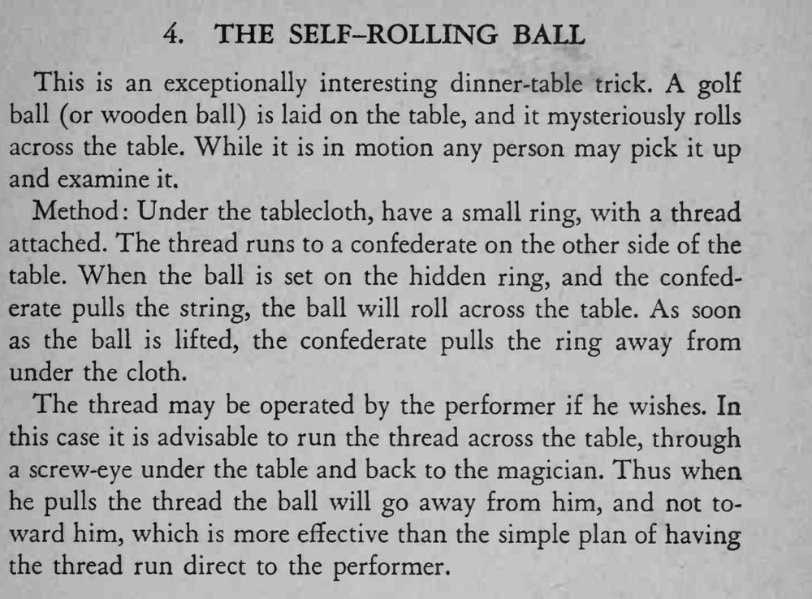

桌上放着一颗高尔夫球，没人碰它，它却自己缓缓滚过桌面，还能被人拿起来随意检查。
拉线要缓慢均匀，球滚动的速度才像自然惯性。

This is an exceptionally interesting dinner-table trick. A golf ball (or wooden ball) is laid on the table, and it mysteriously rolls across the table. While it is in motion any person may pick it up and examine Method Under the tablecloth, have a small ring, with a thread attached. The thread runs to a confederate on the other side of the table. When the ball is set on the hidden ring, and the confederate pulls the string, the ball will roll across the table. As soon as the ball is lifted, the confederate pulls the ring away from under the cloth. The thread may be operated by the performer if he wishes. In this case it is advisable to run the thread across the table, through a screw-eye under the table and back to the magician. Thus when he pulls the thread the ball will go away from him, and not toward him, which is more effective than the simple plan of having the thread run direct to the performer.